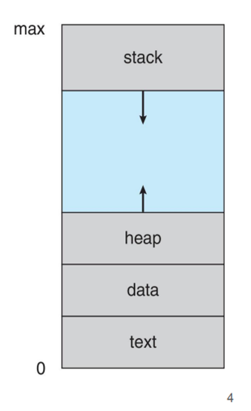

Un programma è passivo in ed è salvato in disco.
Un processo è un programma in esecuzione.
PCB, stati del processo, context switch, creazione e terminazione, IPC con shared memory, message passing, pipe e buffering.
Un programma è passivo in ed è salvato in disco.
Un processo è un programma in esecuzione.
Non è semplicemente il file binario su disco: include
L'architettura è composta in questo modo:

Due esecuzioni distinte dello stesso programma danno luogo a due processi separati, ognuno con il proprio spazio di indirizzamento virtuale, i propri file aperti e il proprio stato di esecuzione. Il SO garantisce che i processi siano isolati tra loro: uno non può leggere o scrivere la memoria di un altro senza meccanismi IPC espliciti.
La memoria di un processo (il suo spazio di indirizzamento) è divisa in segmenti:
malloc in C).Il kernel rappresenta ogni processo con le sue informazioni tramite una struttura dati chiamata Process Control Block.
In Linux questa struttura si chiama task_struct e contiene:
identificatore del processo (PID), stato corrente, valore del program counter, valori dei registri CPU, informazioni di scheduling (priorità, tempo
CPU consumato), informazioni sulla memoria virtuale (page table), lista dei file aperti e informazioni di
sicurezza (UID, GID, capabilities).
Quando il SO deve sospendere un processo, salva tutti i suoi registri nel PCB. Quando lo riprende, li ripristina. Questo meccanismo permette l'illusione della concorrenza anche su un singolo core.
Durante la sua vita, un processo attraversa cinque stati principali:
Un processo che spende la maggior parte del tempo eseguendo operazioni di I/O è detto I/O-bound, mentre uno che usa intensamente il processore per i calcoli è CPU-bound. Lo scheduler gestisce le transizioni spostando i PCB tra varie code: la Ready Queue per i processi in memoria pronti all'esecuzione, e diverse Wait Queues (una per ogni dispositivo) per chi è bloccato in attesa.
Le transizioni sono gestite dallo scheduler (Ready Running, Running Ready per preemption) e dagli eventi di I/O (Running Waiting, Waiting Ready quando l'evento si verifica).
Quando la CPU deve passare dall'esecuzione di un processo a un altro, il SO esegue un context switch. L'operazione si svolge in due fasi: prima il kernel salva l'intero stato del processo corrente nel suo PCB (registri, program counter, stack pointer), poi carica lo stato del processo successivo dal suo PCB.
Il context switch è overhead puro: durante la commutazione la CPU non esegue lavoro utile per nessuna applicazione. Il tempo necessario dipende dall'hardware (tipicamente 1-10 µs) e dalla frequenza con cui lo scheduler decide di cambiare processo. Un quantum di tempo troppo breve porta a troppe commutazioni; uno troppo lungo riduce la reattività del sistema.
In Unix/Linux, i processi si creano con la syscall fork(). Questa crea una copia
esatta del processo chiamante (il figlio è identico al padre): stesso codice, stessi dati,
stessi file aperti. I due processi si distinguono per il valore di ritorno di fork(): nel padre vale il PID del figlio, nel figlio vale 0.
pid_t pid = fork();
if (pid < 0) {
/* Errore nella creazione */
} else if (pid == 0) {
/* Codice eseguito solo dal processo figlio */
execlp("/bin/ls", "ls", NULL);
} else {
/* Codice eseguito solo dal processo padre */
wait(NULL); // Aspetta che il figlio termini
printf("Child Complete\n");
}Come si vede dall'esempio, tipicamente il figlio chiama subito exec() (o una sua variante come execlp) per sostituire la propria immagine con
un nuovo programma. Il padre usa wait() per aspettare la terminazione del figlio e
raccogliere il suo valore di uscita. Questo schema fork-exec-wait è il meccanismo con cui la shell
avvia ogni comando.
La fork() usa il Copy-on-Write: le pagine di memoria
vengono realmente duplicate solo quando uno dei due processi le modifica. Se il figlio chiama subito exec(), la copia non avviene quasi mai, rendendo la fork molto efficiente.
Perché usare più processi? Un'architettura multiprocesso garantisce stabilità e sicurezza. Google Chrome, ad esempio, usa processi separati per la UI (Browser process), per il rendering di ogni singola tab (Renderer process) e per i plugin. Il crash di una pagina web termina solo il suo processo renderer, lasciando intatto il resto del browser.
Ogni processo Linux (tranne il primo) ha un processo padre. Si forma così una gerarchia ad albero. Il processo
radice è systemd (o init nei sistemi più vecchi) con PID
1, avviato direttamente dal kernel al boot. Tutti gli altri processi ne sono discendenti diretti o indiretti.
L'albero è ispezionabile con pstree o ps auxf. Il
comando kill invia segnali ai processi per comunicare con loro o per terminarli. Se
un padre termina prima del figlio, il figlio viene "adottato" da systemd
(reparenting).
exit(status), che libera le
risorse e
notifica il padre. Il valore status (intero, tipicamente 0 per successo, non-zero
per errore) è recuperabile dal padre tramite wait().SIGKILL (non
catturabile) termina immediatamente, SIGTERM chiede gentilmente al processo di
terminare (catturabile), SIGSEGV viene inviato dal kernel quando il processo
accede
a memoria non sua.wait() rimane nella
tabella dei processi come zombie. Occupa una entry nella process table ma non
consuma CPU né memoria. Se un processo produce molti zombie senza raccoglierli, può esaurire gli slot della
process table.La memoria condivisa è il meccanismo IPC più veloce: due o più processi mappano la stessa regione di memoria fisica nel proprio spazio virtuale. Una scrittura da parte di un processo è immediatamente visibile all'altro, senza alcuna copia nel kernel.
In POSIX si usa shm_open() + mmap(); in System V si
usano shmget()/shmat(). Lo svantaggio è che la
sincronizzazione tra i processi è interamente a carico del programmatore: nel classico problema del produttore-consumatore, si può usare un buffer illimitato (il produttore non aspetta mai, il consumatore aspetta se vuoto) o un buffer limitato (il produttore si blocca se pieno). Senza un'adeguata sincronizzazione (es. semafori), si rischiano race condition gravi.
Nel message passing i processi si scambiano messaggi tramite due primitive: send(message) e receive(message). Il kernel funge da
intermediario: copia il messaggio dal buffer del mittente a quello del ricevente.
È più sicuro della shared memory (nessuna memoria condivisa che possa corrompersi) e più facile da usare correttamente, ma introduce overhead per ogni copia del messaggio. È il meccanismo preferito per la comunicazione tra processi non correlati e su sistemi distribuiti.
Il canale di comunicazione tra processi può essere diretto (i processi si nominano
esplicitamente: send(P2, msg)) o indiretto tramite una
mailbox/porta: send(mailboxA, msg), e qualunque processo con accesso a quella
mailbox può ricevere.
Il link può essere unidirezionale (pipe) o bidirezionale (socket). Può essere sincrono (bloccante: mittente aspetta che il ricevente sia pronto) o asincrono (non bloccante: mittente continua subito). La combinazione più comune nella pratica è send asincrono + receive sincrono.
I messaggi in transito vengono accodati in un buffer. Ci sono tre modalità: capacità zero (rendez-vous): mittente e ricevente devono sincronizzarsi esattamente, nessun messaggio in coda. Capacità limitata: la coda può contenere al massimo N messaggi; il mittente si blocca quando è piena. Capacità illimitata: il mittente non si blocca mai (ma la memoria potrebbe esaurirsi).
La pipe è il meccanismo IPC più semplice di Unix: un canale unidirezionale con un'estremità di scrittura e una di lettura. Implementa un buffer FIFO nel kernel. Le pipe ordinarie funzionano solo tra processi correlati (padre-figlio); le named pipe (FIFO) sono accessibili tramite un file nel filesystem e collegano processi non correlati.
Le pipe sono usatissime nelle shell: ls -la | grep txt | sort crea una catena di
processi collegati da pipe. L'output di ogni comando diventa l'input del successivo senza mai scrivere su disco.
I thread sono unità di esecuzione più leggere dei processi, contenute all'interno di un processo. Condividono codice, dati e file aperti del processo padre, ma hanno ognuno il proprio stack, il proprio program counter e i propri registri. Creare e fare il context switch tra thread è molto più economico che tra processi. Approfondimento completo nel capitolo 03.